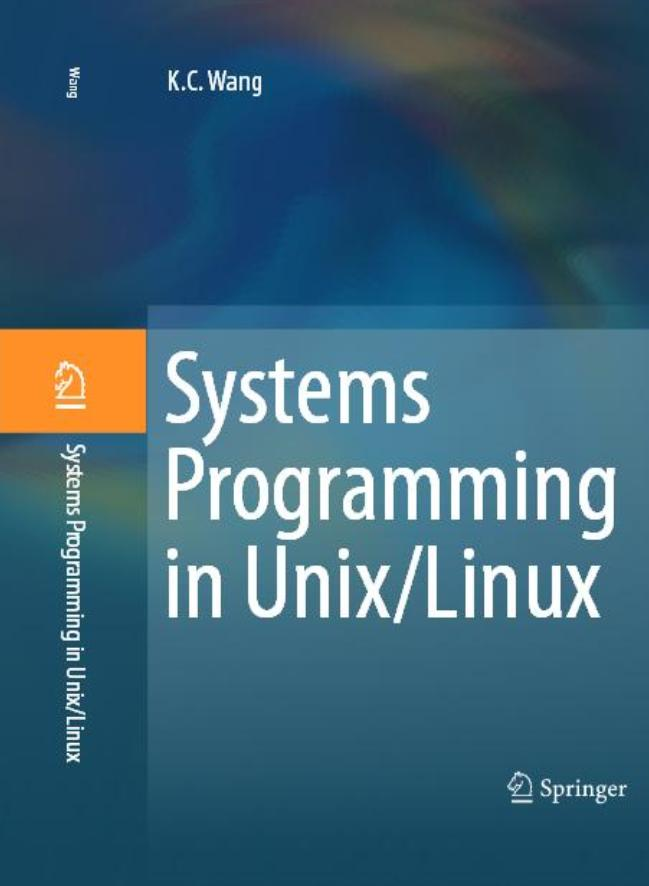
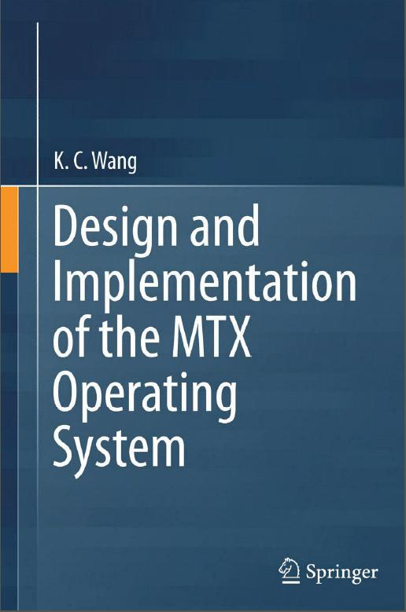

360 Course Plan
CPTS 360 COURSE PLAN
Fall, 2021
COURSE TITLE : CPTS 360 Systems Programming
ZOOM ID: 509-335-3769
TEXT 1:(REQUIRED)
Systems Programming in Unix/Linux,
K.C. Wang, Springer International AG, 2018

TEXT 2:(REQUIRED)
Design and Implementation of the MTX Operating System,
K.C. Wang, Springer International AG, 2015

CLASS NOTES : http://www.eecs.wsu.edu/~cs360/
INSTRUCTOR : K. C. Wang, Professor of EECS, Sloan 321
335-3769, kwang@eecs.wsu.edu
Office Hours: T,Th: 2-3 PM via ZOOM session 509-335-3769
TA : Silas Stokes
Contact Info: silas.stokes@wsu.edu
Office hours: 9:45-10:45am Mon
Zoom Info: https://wsu.zoom.us/j/2541815590 or use meeting ID: 254 181 5590
: Emma Mickas
Contact Info: emma.mickas@wsu.edu
Office hours: 10:30am-11:30am Wed
Zoom Info: https://wsu.zoom.us/j/5887747452 or use meeting ID: 588 774 7452
PREREQUISITES :
Basic knowledge and working experience in Unix commands.
Ability to program in C or C++.
COURSE CONTENTS:
Introduction to Unix/Linux and MTX Operating Systems:
Files, directories, special files, logical organization of
Unix file system; user account, login process and command
execution.
Program development
Source files; compiler, assembler and object files;
linker, library and executable files; loader and execution
images. Symbolic debugger and run-time support.
Execution image of C programs
Code, data and stack segments; function calling convention,
stack frames and parameter passing; long jumps.
File I/O
System calls and low-level file I/O; open, close, read, write,
lseek, file descriptors and file sharing. Execution of User
mode and Kernel mode images, implementation and implications
of system calls.
File Control
Permissions and access control, fcntl, chown, chmod, hard
and soft links, file status and statistics.
I/O redirection, pipes, filters and applications.
Standard I/O Library
Streams and high-level file I/O; user space buffering,
relationship with low-level I/O, char and line mode I/O.
Formatted I/O.
File system implementation
Inodes and file representation; mkfs and physical file
system layout; traversal of the file system tree; booting
system images.
Processes
Concept and implementation of processes, process execution
environment, user mode and kernel mode images, process
states transitions. Processes in the Unix system; init,
login and user processes.
Process Control
fork, vfork, wait, exit, kill, exec operations. traps and
signal handling.
Process Synchronization and Communication
Signals, pipes, semaphores, messages and shared memory
segments. Sockets.
Concurrent Programming
Threads and parallel programming
Networking
Introduction to Internet; host, address resolution,
routing; protocols, client and server; ftp, rlogin, nfs,
and nis, Socket Programming.
Project: To be announced later
Misc Topics: sh and Perl programming, Linux system administration.
COMPUTER SYSTEMS:
YOU MUST have a PC/laptop running Linux AND you can compile and run C programs.
Other Linux systems in EECS for general use.
LAB SESSIONS
NO formal Lab sessions.
Lab assignments and DUE date will be given in class AND posted online HERE.
Midterm Exam: Thursday, October 7, 2021
---------------------------------------------------------------------
GRADING:
Programming Assignments %20 (DUE and DEMO to TA on Th)
Quizz %10 (one per Lab assignmetn; in class)
Exam %30 (Th 10-7-2021, in class).
Project %40 (DUE and DEMO in close week)
---------------------------------------------------------------------